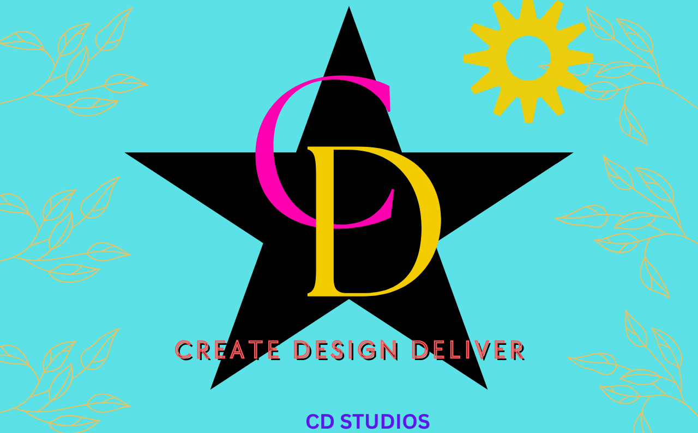

I am the kind of person who observes more than he speaks. Whenever I enter an unfamiliar environment, I quietly take in everything around me—the people, their attitudes, their behavior, and the little details that others may overlook. I may appear calm, quiet, or even reserved at first, but beneath that silence, my mind is constantly processing and trying to understand what is happening around me. I value genuine friendships and I try to treat people with kindness, especially because I believe that making someone feel happy is something worth doing. Sometimes, however, my kindness has been mistaken for weakness, and people have taken my good nature for granted. I dislike disrespect deeply, and with time I have learned that respect should not be demanded but earned through character, confidence, and the way I carry myself. I often make my decisions quietly, giving myself time to think rather than reacting impulsively. Difficult experiences may sometimes weigh heavily on me, but when I regain my balance, I often come back wiser, stronger, and more determined. I am friendly, observant, thoughtful, and kind, but I am also learning that being a good person does not mean allowing others to take advantage of me. I believe my quietness is not weakness—it is simply the space in which I think, grow, and become a better version of myself. https://google.com
cI have a few people in my life whom I trust completely. These individuals have proven themselves to be reliable, honest, and supportive over time. They are the ones I can confide in without fear of judgment or betrayal. Their presence in my life brings me comfort and reassurance, knowing that I have a solid support system to rely on. Trust is not given lightly, and these people have earned it through their consistent actions and integrity. I value their opinions and advice, and I know that they will always have my best interests at heart. In a world where trust can be fragile, having these trusted individuals is a source of strength and stability for me.
DEDICATION
First and foremost, I dedicate this to Jehovah God Almighty for His unfailling faithfulness in my life from the day I was born until now. Every step of this journey has been by his grace. To my parent, words are not enough. Comming from a humble background,you never let our circumstances define what was possible for us. You have sacrificed and work tirelessly to invest in our education, and I promise, your hardwork and dedication I will never take for granted, and will one day make you two the prodest and happiest parents on earth.